一路“下一步”，装完重启
下载安装版，保留默认勾选的 VB-CABLE 虚拟声卡；装完重启电脑。VoiceAec 本体不需要管理员权限，安装过程中会弹一次 UAC（虚拟声卡 + 局域网面板）。
不想装安装版？便携版解压即用，见“安装”一节。
安装、接线、开用。三件事做对，VoiceAec 就能正常工作；其余章节都是解释和排障。
下载安装版，保留默认勾选的 VB-CABLE 虚拟声卡；装完重启电脑。VoiceAec 本体不需要管理员权限，安装过程中会弹一次 UAC（虚拟声卡 + 局域网面板）。
不想装安装版？便携版解压即用，见“安装”一节。
VoiceAec 输出选 CABLE Input；QQ / 游戏语音的麦克风选 CABLE Output；参考回采选你实际放声音的耳机或音箱。
两个 CABLE 选反，是最常见的错误。
看到顶栏显示运行中、三张电平卡会跳动，就可以开语音了。对方还听到回声再换强力模式。
窗口右上角 X 只是收起；退出要到托盘右键。
把 VoiceAec 想成一根“智能音频线”：一头接麦克风和扬声器，另一头接虚拟声卡。语音软件通过虚拟声卡，接收处理后的麦克风声音。
都是常见环境，不需要额外买硬件。缺哪一项，后面都会给出对应的解决办法。
安装包自带 .NET 运行时和全部模型，不用另装开发环境。
不支持 32 位系统；不支持 macOS / Linux。
用来显示控制面板。Windows 10/11 一般已经自带。
如果面板白屏或提示 WebView2 加载失败，再装 Evergreen 运行时。
VB-Audio 提供的免费虚拟声卡。安装版默认帮你装，装完需要重启。
卸载 VoiceAec 不会卸载它；它也可以给 OBS、直播等其他软件用。
能正常收音、正常出声即可。USB 麦克风、领夹麦、摄像头麦克风都可以。
蓝牙耳机的麦克风常切到低音质通话模式；能有线就优先有线。
推荐安装版：默认勾选虚拟声卡、桌面快捷方式，升级和卸载都走 Windows 标准流程。想放 U 盘或不想写注册表，用便携版。
从 GitHub Releases 下载 VoiceAec-v0.4.9-setup-x64.exe。不要从网盘或第三方下载站拿。
双击安装包，语言选“简体中文”，点“确定”。
欢迎页点“下一步”。附加任务页保持两个默认勾选：创建桌面快捷方式 和 安装 VB-CABLE 虚拟声卡，然后点“下一步”。
点“安装”。弹出 UAC 时选“是”，用于安装虚拟声卡和配置局域网面板。拒绝也能装完 VoiceAec，只是这两项要稍后补。
如果装了 VB-CABLE，先重启电脑。重启后“播放设备”里会出现 CABLE Input，“录音设备”里会出现 CABLE Output。
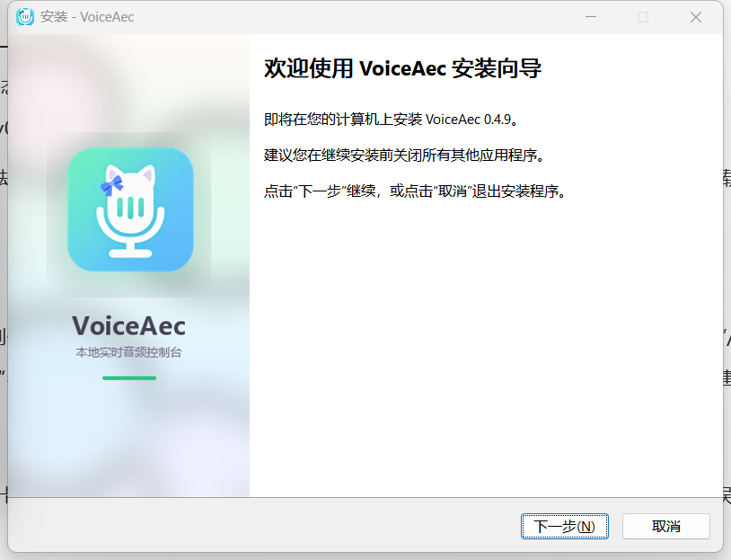
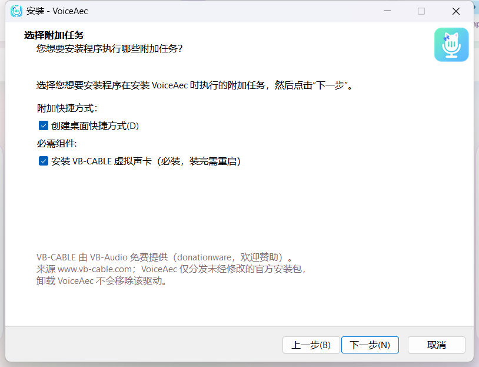
从 Releases 下载 VoiceAec-v0.4.9-win-x64.zip，右键“全部解压”，双击里面的 VoiceAec.exe。不要直接在压缩包里运行。
voiceaec.json；目录不可写时回退到 %LocalAppData%\VoiceAec\voiceaec.json。--no-lan。打开 VoiceAec，确认顶栏显示 运行中，并且麦克风、参考回采、输出三张电平卡都有正常反应。参考回采如果一直“静默”，先别开语音，去选设备。
卸载：Windows“设置 → 应用 → 安装的应用”→ VoiceAec → 卸载；或开始菜单 → VoiceAec → 卸载 VoiceAec。卸载 VoiceAec 不会移除 VB-CABLE。
第一次启动会自动选择：系统默认通信麦克风、默认播放设备（参考回采）、CABLE Input（输出）。大多数电脑开箱即用；不对再手动换。
左侧应该显示“运行中 · 计时”，中间有 CPU 占用，右侧显示当前模式。如果显示“已暂停”，点右上角“恢复处理与输出”。
对着麦克风说话：麦克风电平应跳动。播放一首歌：参考回采应从“静默”变成“播放中”并跳动。然后说话时，输出电平也应跳动。
QQ / Oopz / 游戏语音里：麦克风选 CABLE Output；扬声器保持你的耳机或音箱，不要选 CABLE Input。
回声消除需要知道“扬声器刚才放了什么”。参考回采就是这段参考信号。参考选错、设备静音或一直没声音，AEC 就不知道要消什么，对方仍会听到回声。
戴耳机时没有外放回声，其实可以退出 VoiceAec，把语音软件麦克风改回真实麦克风；见场景配方。
VoiceAec 面板上有三个设备下拉，语音软件里还有一个麦克风设置。四个位置各司其职，不要互相顶替。
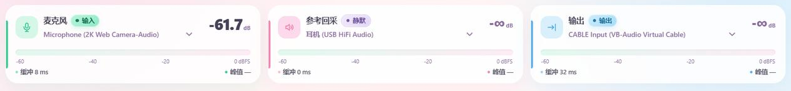
选你说话用的那只麦克风。
选你实际放声音的耳机或音箱，不是麦克风。
必须是 CABLE Input（VB-Audio Virtual Cable）。
QQ / Oopz / 游戏语音：麦克风选 CABLE Output；扬声器保持耳机/音箱。
| 位置 | 应该选 | 选错的后果 |
|---|---|---|
| VoiceAec 输出 | CABLE Input | 语音软件收不到处理后的声音 |
| QQ / 游戏语音 麦克风 | CABLE Output | 对方听到原始麦克风，回声还在 |
| 游戏 / 音乐 播放 | 耳机 / 音箱 | 声音进了虚拟声卡，你自己听不见 |
| VoiceAec 参考回采 | 耳机 / 音箱 | AEC 没有参考信号，消不掉回声 |
| 语音软件 扬声器 | 耳机 / 音箱 | 选了 CABLE Input 会形成回环/啸叫 |
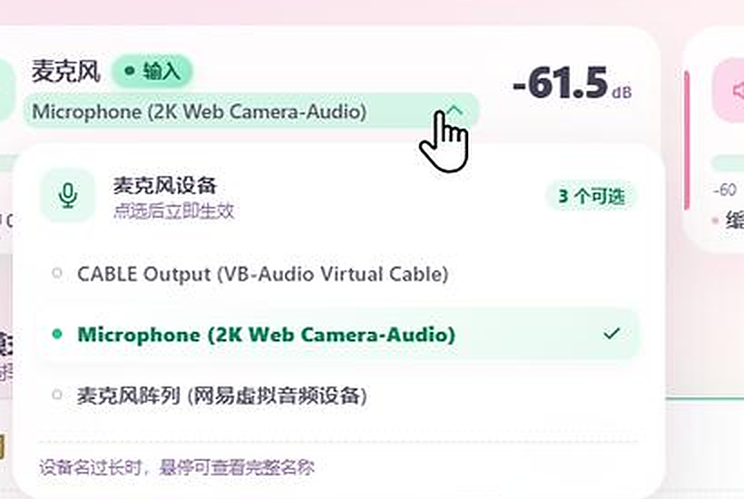
第二参考是给 AEC 的“额外噪声参考”：把第二只麦克风放在旁人/噪声源附近，帮助消掉其他人的说话声；也可以选第二个播放设备。它属于进阶功能，不是必开。
顶栏“开启第二参考”。电平区会多出第四张卡。
点“点击选择设备”，从当前电脑可用的音频设备里，选靠近噪声源的第二只麦克风；也可以选第二个播放设备。
建议用 v1.3 强力模式；如果发现自己的声音被削，换回 v1.2 或关掉第二参考。
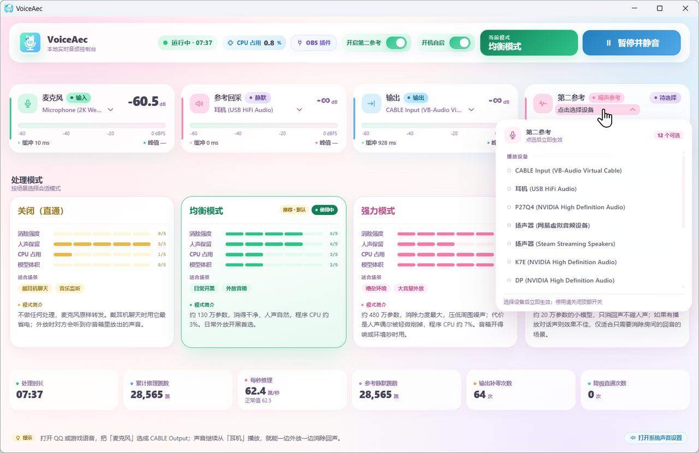
voiceaec.json；下次启动沿用，不会每次重新猜。
模式决定用哪个模型、CPU 用多少、消得多干净。日常从“均衡模式”开始；不够再往上加，不要一上来就最强。
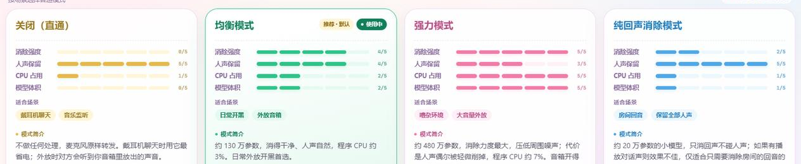
不做处理
麦克风原样转发。戴耳机聊天时最省电；外放时对方会听到你音箱里的声音。
v1.2 · 约 130 万参数
消得干净、人声自然。日常外放开黑首选，也是第一次使用的默认模式。
v1.3 · 约 480 万参数
消除力度最大，还会压低周围噪声。代价是偶尔轻微削掉人声，更适合嘈杂环境或大音量外放。
v1.4 · 约 20 万参数
以回声消除为主，尽量保留人声，适合房间回音或近场麦克风。远距离麦克风实测效果有限，先试听再长期用。
卡片上的“消除强度 4/5”是应用内的相对刻度，用来快速比较，不是实测百分比。
--model 只覆盖本次启动，不写回配置（见进阶）。
同样的软件，不同场景只需要改“模式”或“开关”。先找到最像你的那一条。
游戏声音从音箱/耳机外放，语音软件用 CABLE Output 当麦克风，VoiceAec 消掉对方听到的游戏声。
戴耳机时没有外放回声，其实不需要 AEC。想省资源，可以直接退出 VoiceAec，把语音软件麦克风改回真实麦克风。
除了你自己的回声，旁边人的说话声也会被麦克风收进去。第二参考可以把“旁人噪声”也作为参考，帮助压低。
在 OBS 里给麦克风加 VoiceAec 音频滤镜，让录制/直播也用到 AEC。适合不想开桌面端，或已经把麦克风交给 OBS 的人。
VoiceAec 平时缩在系统托盘里继续处理音频。点窗口 X 只是把面板收起来，不会中断声音。
--tray 静默启动，不弹面板，也不需要管理员。
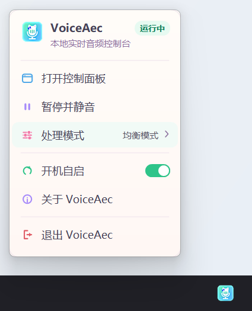
| 对比 | 暂停并静音 | 关闭（直通） |
|---|---|---|
| 采集麦克风 | 停止 | 继续 |
| 神经网络推理 | 停止 | 停止 |
| 输出到 CABLE | 静音 | 麦克风原声 |
| 适合 | 临时离开、省资源、不想让对方听到 | 戴耳机、不需要回声消除 |
| 退出并重启后 | 仍保持暂停 | 恢复上次模式（通常仍是直通） |
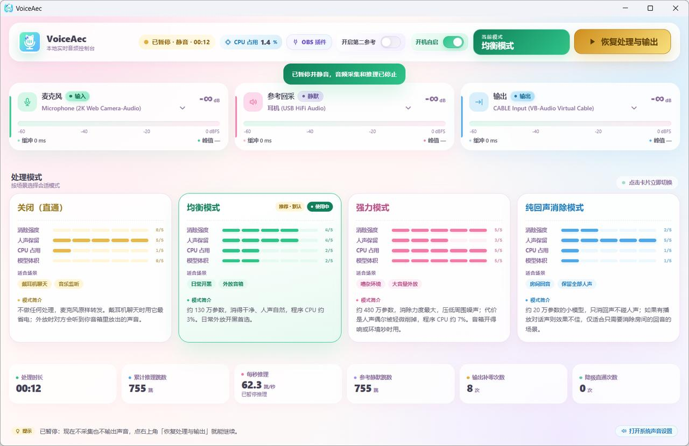
暂停状态会保留：暂停后退出/重启仍保持暂停；点“恢复处理与输出”会沿用暂停前的设备和模式。正常退出不会把正在运行的状态改成暂停。
窗口位置和大小会在关闭/退出时保存，下次在原来的位置和尺寸打开；如果保存的位置不在任何显示器上，会回到屏幕中央。
底部统计可以帮助你检查参考信号和处理状态：参考有没有声音、CPU 跟不跟得上、是否出现降级直通。
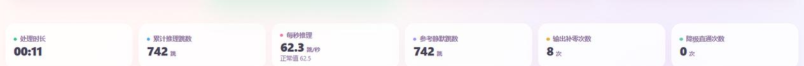
从启动开始累计的实际处理时间。暂停时不增长。它不是延迟指标。
每 16 毫秒处理一跳，数字持续增长。放一整天会很大，不是错误。
正常约 62.5 跳/秒。低于 55 或高于 70 会变红；低于 55 通常说明 CPU 跟不上。
参考设备没有声音的跳数。放音乐时应明显少于累计跳数；两者相等，说明参考设备选错或一直静音。
启动、切换设备时少量补零正常。快速上涨通常意味着输出卡顿/欠载，声音可能断续。
大于 0 表示 AEC 处理失败，声音被直通。先确认模型文件完整、CPU 不过载；持续增长就去看日志。
如果你用 OBS 录制或直播，可以给麦克风加一个 VoiceAec 音频滤镜，让 OBS 直接拿到消过回声的声音。
不是最小化，是退出程序。OBS 运行时安装器会拒绝安装/卸载，也不会自动帮你关。
面板顶栏点“OBS 插件”。没装过会显示“一键安装到 OBS”；装过会显示“更新 / 重新安装”。
插件要写到 %ProgramData%\obs-studio\plugins\obs-localvqe。已有版本会先备份到 %ProgramData%\VoiceAec\ObsPlugin\backups。
在麦克风的“滤镜 → 音频滤镜”里点 +，添加 VoiceAec。
滤镜属性里的 Reference source 选桌面音频或游戏音频源。不选就只做降噪/去混响，不做回声消除。插件界面可能是英文，认准 Reference source 这一项即可。
同一只麦克风不要同时被桌面端和 OBS 滤镜处理；用 OBS 时，托盘菜单“暂停并静音”。
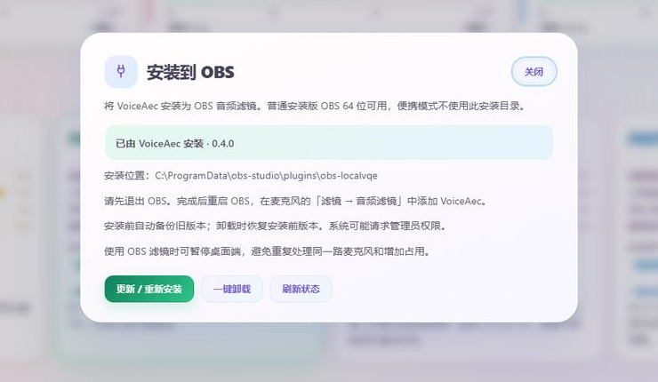
控制面板默认对同一局域网开放。手机浏览器打开「关于」里显示的地址，就是同一个面板，不需要装 App。
手机/平板和电脑连接到同一路由器所在的局域网，电脑用网线连接也可以；访客网络常开启“客户端隔离”，会打不开。
点面板左上角 VoiceAec 品牌区，或托盘右键“关于 VoiceAec”。里面会显示 http://192.168.x.x:8765/ 这样的地址。
输入或点击这个地址。能看到同样的电平、模式、设备选择；没有登录密码。
--no-lan，面板只监听本机。安装版会自动配置防火墙私有网络规则；便携版可能需要手动配置，或直接用 --no-lan。
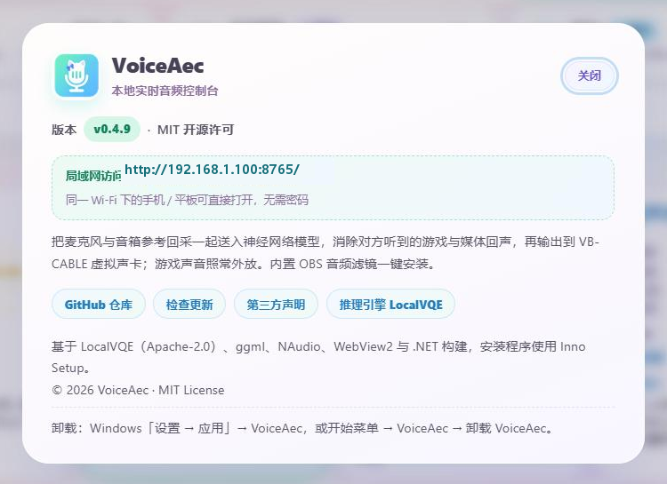
按症状找。每条都给出“下一步做什么”，不用从头读。
先按顺序检查以下三项：
如果参考回采一直静默，AEC 没有参考信号，换什么模式都没用。先去选设备。
先看底部“每秒推理”：正常约 62.5 跳/秒，低于 55 会变红，通常是 CPU 跟不上。
按链路从后往前查：
CABLE Output？不是就改。CABLE Input？说话时输出电平有没有跳？AEC 需要缓冲，几十毫秒级延迟是正常的，不适合专业实时乐器监听。语音聊天一般感觉不到。
如果声音变调或明显断续：检查 Windows 声音设置里 CABLE Input 和 CABLE Output 的格式，统一设成 48000 Hz；关闭占用音频设备的程序；换回均衡模式再试。
第二参考适合“旁边有人说话/噪声源固定”的场景，不是万能降噪。它需要第二只麦克风真的靠近噪声源，或者选第二个播放设备。
如果自己的声音被削：关掉第二参考，或把模式换回均衡 v1.2。没有旁人噪声时，不建议长期开着第二参考。
v0.4.9 起，保存的设备被拔掉会自动回退到系统默认并在底栏提示，不会再因此启动失败。如果仍然双击没反应：
voiceaec.json（安装版在 %LocalAppData%\Programs\VoiceAec\），或 %LocalAppData%\VoiceAec\voiceaec.json，然后重新启动。VoiceAec.exe --mic "你的麦克风" --ref "你的扬声器" 启动。虚拟声卡装完必须重启电脑，设备才会出现。
VoiceAec 本体已经装好，只是虚拟声卡和局域网配置没做。打开 VoiceAec，面板顶部会出现黄色引导条：点“一键安装虚拟声卡”，按提示允许管理员权限，装完重启。
局域网没配置也不影响本机使用；需要手机访问时，重新运行安装包并允许 UAC，或加 --no-lan 只用本机面板。
v0.4.9 起会自动回退到系统默认设备，底栏会提示“xxx 不在了，已临时改用 yyy”；保存的选择不会被覆盖，设备插回后重启就会用回原设备。
想立即换设备，直接在面板下拉里选择即可；也可以建一个带 --mic / --ref 参数的快捷方式启动。
升级：直接运行新版安装包，安装器会结束旧实例，设备配置保留。
卸载：Windows“设置 → 应用 → 安装的应用”→ VoiceAec → 卸载；或开始菜单 → VoiceAec → 卸载 VoiceAec。卸载不会移除 VB-CABLE。安装目录里的 voiceaec.json 会被删除；如果曾回退到 %LocalAppData%\VoiceAec\voiceaec.json，这个文件可能保留，可手动删除。
音频处理仍在后台运行，只是面板显示不出来。装 Microsoft Edge WebView2 Runtime（Evergreen 版）后重启 VoiceAec。
如果仍然白屏：检查杀毒软件是否拦截了 WebView2 子进程；重启电脑；或卸载重装 VoiceAec。
Windows 11 默认把新图标放进托盘溢出区。点任务栏右下角的 ^ 找猫咪麦克风图标；可以把它拖到任务栏常显。
也可以在“设置 → 个性化 → 任务栏 → 其他系统托盘图标”里把 VoiceAec 设为显示。如果托盘和任务管理器都没有进程，说明程序没启动，见“双击没反应”。
v0.4.8 起会记住。在面板或托盘切换模式后会写入 voiceaec.json，下次启动（包括开机自启）自动恢复。想临时用别的模式，可以在快捷方式目标末尾加 --model v1.3；它只覆盖本次启动，不写回配置。
先看顶栏或托盘菜单里的“开机自启”开关是不是开着。它写的是当前用户的 HKCU Run 项，不需要管理员。
先完全退出 OBS，再点“更新 / 重新安装”。安装器不会自动关 OBS，也不会在 OBS 运行时强行替换文件。
只支持普通安装版 OBS 64 位；OBS 便携版不扫描 %ProgramData%\obs-studio\plugins\obs-localvqe，当前一键安装不适用。需要管理员权限；拒绝 UAC 会失败。
检查三件事：
确认手机和电脑在同一个 Wi-Fi；用「关于」里当前显示的地址，不要用旧 IP。访客 Wi-Fi/公司网络可能开启客户端隔离，手机访问不到电脑。
检查 Windows 防火墙是否允许 VoiceAec 在“专用网络”通信。便携版可能没有自动配置 URL ACL/防火墙；可以改用安装版，或加 --no-lan 只用本机。不要把端口转发到公网。
面板没有登录密码，只按私有网段（192.168/16、10/8、172.16/12）开放。它的设计场景是可信家庭网络；同一网络里的人能打开并改设置。
不要在公共 Wi-Fi、宿舍共享网络长期开启；不要做公网端口转发；不需要时加 --no-lan。
这是 QQ 侧对虚拟设备的兼容问题，音频链路本身通常是正常的。可以尝试：在 QQ 语音设置里重新选择一次 CABLE Output；重启 QQ；或换用 Oopz、Discord、游戏自带语音验证。
如果其他语音软件能正常使用 CABLE Output，可记录 QQ 版本和报错信息，再向 QQ 反馈。
安装包没有购买商业代码签名，新项目容易被误报。先从 GitHub Releases 核对文件名和 SHA256（见进阶 · 校验下载），确认来源无误后再决定是否放行。
不要为了安装而整体关闭杀毒软件；最多把下载的安装包/安装目录加入信任。装完可以恢复防护。
需要使用启动参数、修改配置或校验下载时，可查阅本节。
在快捷方式“目标”末尾加参数，或命令行运行 VoiceAec.exe --参数。
| 参数 | 默认 | 说明 |
|---|---|---|
--mic | 系统默认通信麦克风 | 麦克风设备名（子串匹配），优先级高于配置文件。 |
--ref | 系统默认播放设备 | 参考回采设备；也可以填麦克风（近讲场景）。 |
--ref2 | none | 第二参考；找不到会自动降级单参考。 |
--out | CABLE Input | 输出设备；缺少 CABLE 时会回退并显示引导条。 |
--threads | 2 | 推理线程数；不确定就保持默认。 |
--model | v1.2 | off / v1.2 / v1.3 / v1.4。 |
--port | 8765 | 面板端口；占用时自动 +1，直到 8774。 |
--tray | — | 静默托盘启动，不开面板；开机自启用的就是它。 |
--console | — | 保留/新建日志控制台，排查时用。 |
--list | — | 列出音频设备后退出，用来查设备全名。 |
--no-lan | — | 只监听本机，不对局域网开放面板。 |
保存设备选择。安装版在 %LocalAppData%\Programs\VoiceAec\voiceaec.json；便携版优先在 exe 旁，目录不可写时回退到 %LocalAppData%\VoiceAec\voiceaec.json。
一般不用手改。v0.4.9 起设备缺失会自动回退到系统默认，不需要删配置；如果仍无法启动（例如配置损坏），可在退出程序后删除这个文件，或改用 --mic / --ref。
面板默认 http://localhost:8765/；端口占用会尝试 8765–8774。局域网地址在「关于」里显示。
默认不写日志文件。排查时用 --console 启动，会保留一个日志控制台；--list 可列出设备。
HTTP API 需要请求头 X-VoiceAec-Token，面板会自动携带。接口清单和开发说明见 README。
在 PowerShell 里运行 Get-FileHash .\文件名 -Algorithm SHA256，和下面比对。
安装版 VoiceAec-v0.4.9-setup-x64.exe
5160FBA899FDFFDEBE816BFCA07CA5A8BE13CC6AF1FE16D8A9410593A626C3A5
便携版 VoiceAec-v0.4.9-win-x64.zip
5B03D634E7A0F41C6EE01F1233ECC6BC26A838FA08BDD5811E7F20FECA6BB660
SHA256 来自 v0.4.9 发布说明。如果下载的是更新版本，请以对应 Release 页的校验值为准。
VoiceAec 不提供账号、不上传音频；所有音频处理都在你的电脑上完成。
麦克风和参考回采只在本机内存里处理，输出到本机虚拟声卡。程序不需要登录，也没有云端账号。
面板只接受私有网段访问，但没有登录密码。只在可信家庭网络开启；不需要时用 --no-lan 关掉。
应用代码 MIT；推理引擎 LocalVQE 为 Apache-2.0；ggml、NAudio、WebView2 等第三方组件见声明。VB-CABLE 是 VB-Audio 的捐赠软件。
先确认版本和症状，再去 Issues 搜索或提问。带上信息能少一轮来回。